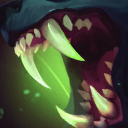
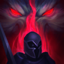
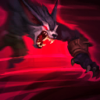

起手裝備
 長劍
長劍
保留海妖殺手 → 殞落王者之劍 → 暮夜與黎明 → 臨界點 → 守護天使；Q 拖曳跟隨、E 延遲恐懼與 R 落地後強化普攻壓制構成現行手機版控制鏈。起手長劍，鞋線狂戰士護脛→槍銅護脛；核對五成裝、前三核心及情境替換來源。


五件成裝與鞋子分開列示；起手與核心是購買路線，不是額外佔用的成裝欄位。鞋子完成時機仍依對線壓力與回城金錢調整。


遇強則強／公理奧術大師／卓越／光輝披風／傳奇：疾速。依Q 拖曳跟隨、E 延遲恐懼與 R 落地後強化普攻壓制構成現行手機版控制鏈核對觸發條件；確認主系各列一枚與一枚副系，First Strike映射先發制人、Empowerment映射遇強則強。


閃現保留進場角度與撤退彈性，重擊維持打野必備。 本英雄以鬥士／追獵／低血續戰定位使用；7.3b不改重擊主動斬殺值，需看進化與充能。
加點優先：Q > W > E
優先級Q > W > E；保留適合本頁清營的前三級，之後依優先級逐級檢查，R在5／9／13級。此為15級編輯順序，不宣稱逐場固定最優。
普攻造成額外魔法傷害；生命低於門檻時會按額外傷害治療自己。

撕咬目標造成傷害並治療自身；拖曳施放可躍到目標身後並跟隨其位移，需以手機版拖曳方向操作。

被動感知低生命敵人，朝獵蹤目標移動時加速並在攻擊低生命目標時提升攻速；主動搜尋不能在與英雄交戰時使用。
先獲得減傷，持續至少1秒後再次施放或自然結束時恐懼周圍敵人；開啟後1秒內取消不會恐懼，會返還部分冷卻。

躍向指定位置，距離隨跑速增加；落地後短時間強化下一次普攻，攻擊英雄才躍向並壓制目標、連續觸發命中效果及治療。不是飛行途中撞到第一名英雄即壓制。
Q 拖曳跟隨、E 延遲恐懼與 R 落地後強化普攻壓制構成現行手機版控制鏈。重寫 R 跳躍→強化普攻壓制、Q 拖曳與 E 最短恐懼時間；取消交戰中主動 W。
交戰前2技搜尋 → 3技減傷 → 拖曳1技繞後 → 滿1秒後恐懼 → 普攻
二技主動在交戰前使用；三技開啟至少1秒後再釋放恐懼。拖曳一技到目標身後，再將其趕向隊友。
3技減傷 → 4技跳至落點 → 強化普攻觸發壓制 → 條件滿足後恐懼 → 1技追擊
跳躍落地後必須在強化窗口內普攻英雄才觸發壓制；三技已持續至少1秒才能主動恐懼，勿把跳躍本身當壓制命中。
3技減傷 → 1技治療 → 普攻 → 4技調位 → 強化普攻壓制
靠減傷、撕咬和被動延長戰鬥；四技落地後接英雄普攻取得壓制與治療。交戰中不能主動開二技搜尋，仍要避開重創與硬控。
靠被動和一技維持清營血量；交戰前可用二技搜尋，進入英雄戰鬥後不能再主動開二技。三技先開減傷、拖曳一技繞後，確認三技已持續至少1秒再恐懼。
海妖殺手 → 殞落王者之劍成形後，依鬥士／追獵／低血續戰定位處理團戰與兵線；第三件接暮夜與黎明。後兩件按情境調整，保留主要輸出循環或承傷功能。支援前確認重擊層數、充能與物件時間，沒有線權時先交換另一側資源。
四技先選落點，再在強化時間內普攻英雄觸發壓制；不以沿途第一個碰撞目標判定。確認隊友能跟上，接恐懼與一技追蹤，或保留控制反開。
以同頁打野威脅名單阿姆姆、關、拉姆斯更新，有利名單僅是既有機制判斷，排除與威脅重複者；沃維克入侵仍看兩側線權、血量及關鍵技能，不當作固定單挑勝率。
對局名單是機制與分路判斷，不代表固定勝率；需同時看雙方熟練度、兵線與陣容。
替換以本頁五件成裝為基準；同一格建議擇一。二、三級鞋是一條升級線，換鞋時整條同步；魔劍進化不占新欄位。
高
觸發：敵方前排物防／魔防成形，或近身普攻威脅明顯。
已帶對應穿透或冰霜之心時保留，不重複購買；依實際傷害類型決定。
高
觸發：主要死亡原因是一輪集火，無法完成輸出或控制。
同一格有多個建議時擇一；核心成形後依實際威脅調整。
高
觸發：敵方法術先手或持續魔法傷害成為主要威脅。
守護天使 → 魔提斯深淵
依魔法傷害壓力補魔防；已有命脈裝時改用自然之力，避免重複命脈。
依魔法傷害壓力補魔防；已有命脈裝時改用自然之力，避免重複命脈。
高
觸發：魔法傷害與控制鏈影響生存或輸出。
狂戰士護脛 → 水星之靴
魔法傷害及可被韌性縮短的控制占主導時，鞋線整條改水星之靴→鎖鏈軍靴。
魔法傷害及可被韌性縮短的控制占主導時，鞋線整條改水星之靴→鎖鏈軍靴。
韌性不能縮短所有控制，例如擊飛；護盾與解控各有適用條件。
高
觸發：敵人持續回復令集火失敗。
守護天使 → 生化龐克鏈鋸之劍
需要穩定施加重創時改用鏈鋸；不要為重創破壞攻速或暴擊核心。
需要穩定施加重創時改用鏈鋸；不要為重創破壞攻速或暴擊核心。
本頁校正版本：7.3b；校正日期：2026-10-15。
參考來源標示版本：7.3b
Tier、出裝、符文與對局是本站編輯建議，不是官方推薦或已驗證台服勝率。v118延續同日v117的逐路複核，針對來源缺口及數值衝突再核對；未宣稱所有技能已在手機內逐級實測。
評級理由：依同分路7.3b參考 A，S → A，作本站評級。 Q 拖曳跟隨、E 延遲恐懼與 R 落地後強化普攻壓制構成現行手機版控制鏈；沒有台服同分路勝率樣本。
Riot 官方資料 ↗ · WildRiftFire 參考攻略 ↗
本頁延續2026/10/15 v117的打野逐項複核，當前採用7.3b來源；來源只用作配置與機制參考，不等同官方推薦或台服即時勝率。
依同分路7.3b參考 A，S → A，作本站評級。 Q 拖曳跟隨、E 延遲恐懼與 R 落地後強化普攻壓制構成現行手機版控制鏈；沒有台服同分路勝率樣本。